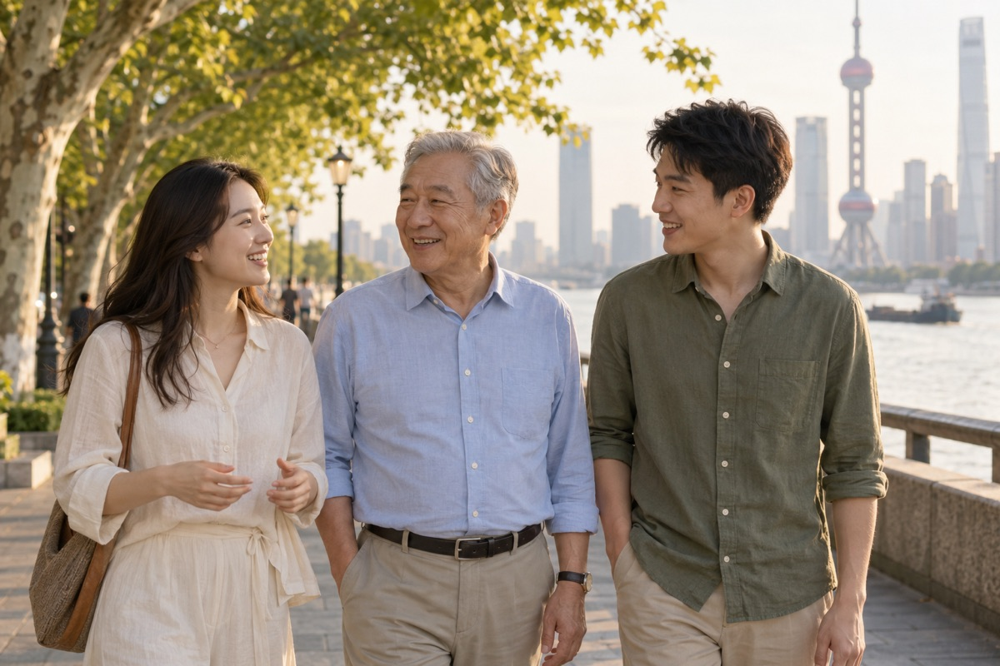

01
Tell us what you need
Share your goals, timing and language needs. We clarify what support fits.
Navigating healthcare in another country shouldn’t mean navigating it alone. We help your family connect with Shanghai’s medical expertise — and coordinate the details along the way.
Personal coordination. Clear information. Thoughtful support.

Explore specialty pathways across Shanghai’s university-affiliated hospital systems. Each appointment is confirmed individually with the hospital.
We coordinate the practical steps. Qualified clinicians make all medical assessments and treatment decisions.
Share your goals, timing and language needs. We clarify what support fits.
We organize records, coordinate translation and contact appropriate hospital departments.
Once appointments are confirmed, we help coordinate visa documentation, transport and accommodation.
Visit coordination, interpretation and record handover, with follow-up arrangements as agreed.

“Behind every patientCareful planning. Consideration for everyone.
is a family
that cares.”
Quoted in writing according to scope, duration and case complexity. No treatment fees are bundled into a blanket promise.
Determined by the hospital and actual care delivered. Appointment availability and estimates require hospital confirmation.
Interpretation, accommodation and transport are itemized, with inclusions and cancellation terms agreed in advance.
No. Beneficial to Family is being developed as a medical coordination and concierge service. Diagnosis, treatment and clinical advice are provided by licensed medical institutions and clinicians.
The inquiry form accepts contact details and a service category only. Do not send medical records in messages; a separately approved process and consent are required.
This is not an emergency service. Seek local emergency care for urgent symptoms. Complex cases require hospital assessment before travel; do not make travel commitments based on this website alone.
We will coordinate an assessment with the hospital and recommend the specialist best suited to your needs. You can plan your departure after the specialist has confirmed the appointment time.
The final decision on your visa to China rests with the competent Chinese authorities. We will provide comprehensive assistance and support. Official Chinese visa-exemption information ↗ · IATA Travel Centre: travel document requirements ↗
Check the applicable passport type, purpose of travel and permitted stay with the relevant Chinese embassy or consulate before departure.
Beneficial to Family Limited (宜府（亞太）有限公司) operates this website. We coordinate Shanghai medical visits and medical travel for international patients and their families. We are not a hospital: diagnosis, treatment and decisions on clinical suitability remain with licensed clinicians and hospitals.
Our services include understanding your needs, organizing existing records, hospital matching, specialist appointment requests, visa-document support, interpretation, transport and accommodation coordination. Appointments and third-party services require individual confirmation.
Official website：linksinocare.com · WhatsApp +852 5749 5657
From your first question to your journey home, we help connect the medical and practical details of visiting Shanghai — for you and the people travelling with you.
We help coordinate record preparation, hospital matching and specialist appointments, then plan transport and accommodation around the confirmed schedule. Hospital acceptance comes before travel commitments.
Request airport transfers, hospital transport, accessible accommodation and interpreter support. Providers, availability, charges and cancellation terms are confirmed before booking.
For accompanying family, we can help coordinate optional Shanghai cultural visits and light city itineraries through suitable local providers, around the patient’s appointments and care needs.
Patient sightseeing is optional and subject to the treating clinician’s advice and the person’s condition. We help coordinate changes, record handover and agreed follow-up arrangements. No recovery or fitness-to-fly guarantee is offered.
Medical care is provided by licensed medical institutions. Travel services are coordinated with third-party providers; scope, supplier responsibilities and fees are agreed separately in writing. Sightseeing must never delay treatment.
Discuss your medical travel plans ↗For families exploring Shanghai care from Southeast, Central and West Asia, Eastern Europe, the United States and across Europe. Each request is assessed individually; availability is not guaranteed.
Our website is available in English and Chinese. Request your preferred language before booking; interpreter availability and fees must be confirmed. Hong Kong and Shanghai use UTC+8. Agree a call time in both time zones.
Confirm hospital acceptance, appointment dates, record requirements and expected stay first. Ask the relevant Chinese embassy or consulate to confirm entry requirements for your nationality and purpose of travel. Do not assume visa-free entry covers your plan.
Hospital charges are generally quoted in CNY. Your written coordination quote will specify its currency, payment recipient, inclusions, cancellation terms and any exchange or bank fees. Confirm coverage and pre-authorization with your insurer; direct billing and reimbursement are not guaranteed.
Tell your coordinator about accompanying family, accessibility, dietary and accommodation preferences before services are booked. Availability is confirmed individually. Returning-home follow-up must be agreed with the treating provider.
This is a test service: use fictional details only. If the inquiry server is running, contact details and messages are saved on it. Authorized administrators and anyone holding your private inquiry link can access that conversation. Do not share the link. Do not enter medical records, identity or financial documents. The inquiry is not a marketing subscription. No third-party analytics or remote fonts are loaded by these website files. Production hosting, data recipients, retention, rights contacts and cross-border arrangements still require confirmation before real intake.
Website operator：Beneficial to Family Limited · 宜府（亞太）有限公司
General service enquiries · Hong Kong / Shanghai time: UTC+8. Response times are agreed with the team; this is not an emergency channel.
Opens WhatsApp, an external service subject to its own privacy terms. Start with your service category, preferred language and timing only. Do not send medical records, passport copies or payment details; first agree an appropriate information-sharing process.
Please do not send medical records here. We will provide the relevant notice and authorisation when needed.
Tell us what matters to your family. We’ll help clarify the next step.
For family offices, professional advisers, insurers and international alumni communities.